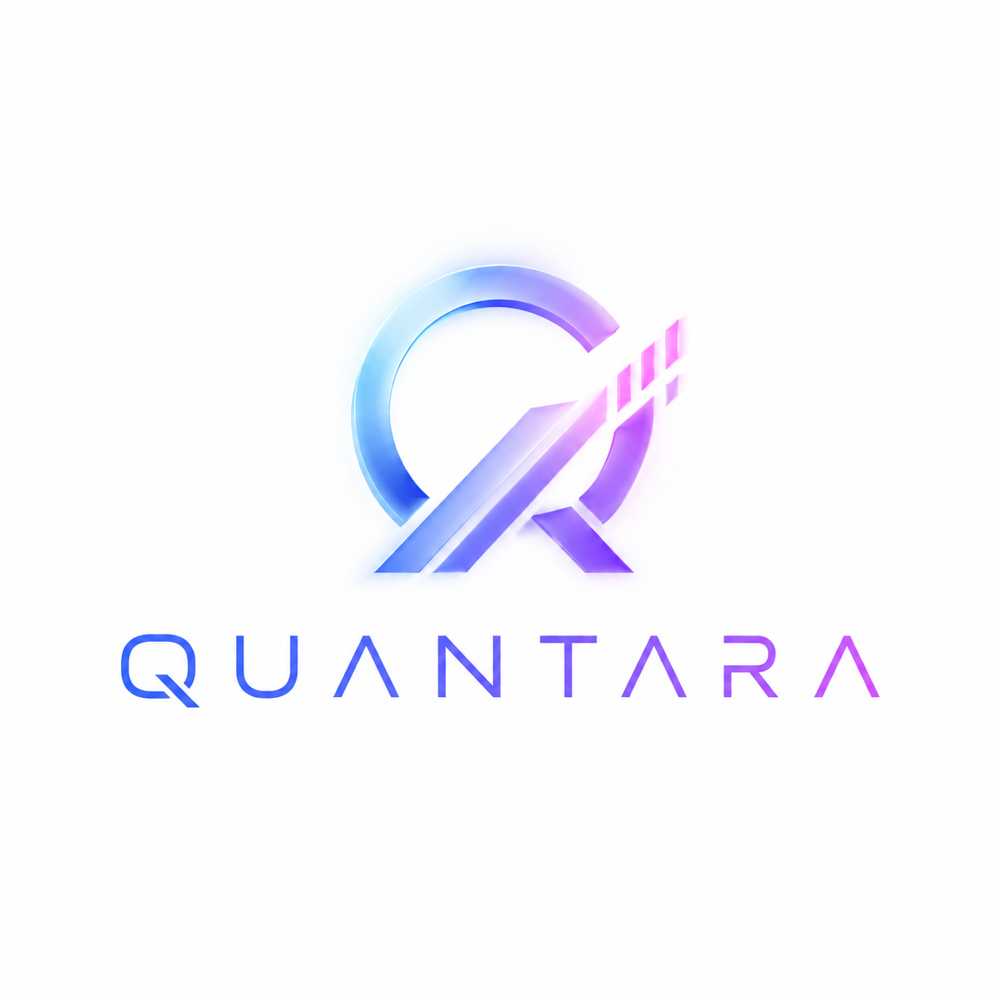

L1Detection
Atomic events from OHLCV — EMA crossings, ATR compression /
expansion, wick rejections, swings, breakout attempts, RSI thresholds.

Market State Operating System
Not a bot. Not signals. Not a GPT wrapper over candles. Quantara analyses market behaviour through causal, explainable events — answering what is happening, why, and what is likely next, with a traceable chain all the way down to raw OHLCV bars.
Every output can be unrolled backwards: scenario → transitions → supporting events → L2 patterns → L1 detections → specific candles. No black box, no GPT hallucinating in the analyser’s seat — the model writes narratives on top of state, it never invents the state.
fake_breakout,
liquidity_sweep, absorption,
stop_run, rejection_at_level,
trend_pullback_complete, RSI divergences.
reversal_watch, breakout_watch,
mean_reversion, continuation,
range_test.
Event and transition IDs are computed from the input. Identical candles → identical event log → identical scenario births. No hidden randomness, no wall-clock leakage.
Append-only journal of events and transitions; state is derived as a left fold — you can rewind to any point in history.
Not batch — a five-phase per-event pipeline (decay → evidence → invalidation → births → structure), so a scenario can be born, weakened, killed and reborn within a single run.
Each timeframe is computed independently; multi-timeframe composition is a separate layer with explicit conflict resolution.
Every term has exactly one canonical, versioned definition. Changing a detector requires bumping the dictionary entry, which propagates as automatic cache invalidation via fingerprint.
A unified PersistenceAdapter backs IndexedDB (browser) and better-sqlite3 (server, WAL mode). Cross-shard journal with deduplication.
An AbortController propagates React → fetch → Next API route → Anthropic SDK. The Stop button actually stops the LLM within milliseconds.
Event stream from LLM to UI with proper back-pressure and graceful degradation on 503.
A separate track focused on results that are statistically defensible, not just “looks nice.”
A full matrix — 5 symbols × 3 timeframes × 3 lookback periods = 45 runs in one command.
Guarded against Simpson’s paradox: rates are recomputed from summed numerators and denominators, not averaged from per-report rates.
Leaderboard, confidence trajectory, cross-market consistency, regime split (trend / range / exhaustion / neutral) and failure analysis with dominant kill cause.
A geometric Brownian motion baseline that establishes the noise floor for interpreting confirm rates.
Found and documented two structural biases (L1 swing look-ahead, target-before-stop in the outcome evaluator) with quantified magnitude before running real data.
Most statistical pipelines aren’t audited for look-ahead bias before the first backtest — teams run the matrix, celebrate the pretty numbers, and hit the bugs only when the numbers refuse to reproduce. Here, every detector and the outcome evaluator were audited line by line, a null test established the noise floor, and two biases were surfaced, measured and documented inline. Only then does the matrix run.
The full pipeline runs end-to-end, from candles to narrative. The
/trading/analytics dashboard exposes ~30 metrics per scenario
type with cross-report consolidation. Validation infrastructure is built
and verified; awaiting the full matrix pass on real market data.
Role — Product owner + architect. Built in partnership with an AI engineer through iterative collaboration: product direction and invariants set by me, implementation and calibration push-back from the partner.